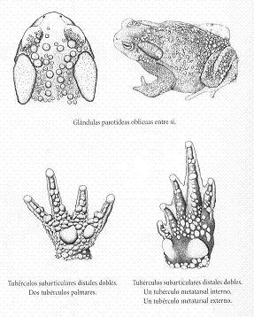
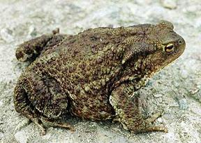
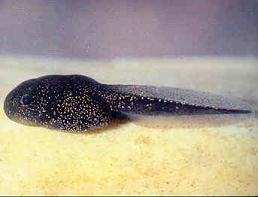
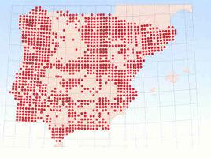

|
| Sapo
común |
Bufo
bufo |
| Orden:
Anura, familia: bufonidae |
 Descripción
Descripción |
| Adulto |
| Lámina |
 |
| Foto |
 |
| |
|
Sapo
grande y de aspecto robusto que suele alcanzar
150 mm. de longitud cabeza- cuerpo, aunque ocasionalmente
se han allado hembras de hasta 210 mm. Cabeza
ancha con glándulas partoideas muy grandes,
divergentes posteriormente. Ojos con pupila horizontal
y bastante adelantados, y tímpano visible.
Tronco muy grueso con patas muy robustas, con
cuatro dedos en las nateriores y cinco en las
posteriores, estos últimos presentan membranas
interdigitales extensas pero incompletas. Tegumento
generalmente cubierto de grandes verrugas que
en el dorso poseen a menudo la cúspide
córnea y oscura y ventralmente son mas
granulosas. |
Coloración
muy variable, con algunos individuos casi negros
y otros muy pálidos. Con frecuencia presentan
manchas de color amarillo pálido y de tamaño
variable sobre un fondo marrón oscuro.
También pueden aparecer otras manchas,
rojizas, anaranjadas o incluso verdosas, mientras
que otros ejemplares son casi uniformes. Partes
inferiores blanquecinas o amarillentas con manchas
oscuras de densidad variable. Iris rojizo a cobrizo
más o menos pigmentado de oscuro. |
| Dimorfismo
sexual |
| Dentro
de una misma población, los machos son más
pequeños, aunque sus extremidades anteriores
anteriores son porporcionalmente más largas,
con antebrazos más robustos. Las diferencias
de tamaño entre sexos resultan, en ocasiones,
muy pronunciadas. En época de reproducción,
los machos presentan callosidades oscuras en los
tres dedos internos de las manos. |
| Descripción
de la larva o juvenil |
 |
Renacuajo
pequeño que alcanza los 35 mm. de longitud
total. Espiráculo en el flanco izquierdo
y dirigido horizontalmente hacia atrás.
Ojos en posición dorsal. La anchura de
la boca iguala o supera la distancia entre los
ojos. El pico córneo es blanquecino. Membrana
caudal más o menos simétrica dorsoventralmente,
convexa pero poco elevada. Extremo de la cola
redondeado. |
Color
dorsal negruzco a veces con motas doradas o plateadas,
y partes inferiores grisaceas. Puede presentar
pequeñas motas negras en el vientre y la
cola. |
|
|
Distribución |
 |
Ocupa
prácticamente toda Eurasia, excepto su
franja más septrentional, y se extiende
a lo largo de Rusia hasta China y Japón,
áreas donde la identidad taxonómica
de las poblaciones está aún por
confirmar. Ausente en Irlanda e islas mediterráneas
excepto Sicilia. También se halla en el
noroeste de África. Ocupa casi toda la
península Ibérica, siendo no obstante
más escaso en zonas áridas del sur
y del sureste peninsular. Está citado en
la isla de Ons (Pontevedra) |
| Variaciones
geográficas |
Hasta
el momento se han descrito tres fomas, aunque
la validez de dichas subespecies deber ser refrendada
en futuros estudios. En la franja eurosiberiana
del Cantábrico se encontraría la
forma nominal Bufo bufo bufo, de tamaño
relativamente pequeño y tegumento más
liso. |
En
el macizo
de Gredos se presenta
la forma Bufo
bufo gredosicola de
diseño más contrastado, tamaño
medio y glándulas paratoideas grandes. |
| El
resto de la península estaría ocupado
por la forma Bufo bufo spinosus , caracterizado
por su gran tamaño, abundancia y prominencia
de verrugas, y glándulas paratoideas muy
grandes. En Galicia se han encontrado poblaciones
posiblemente intermedias entre el B. b. bufo
y B. b. spinosus. |
|
|
Habitat |
Especie
de amplia valencia ecológica que vive dese el
nivel del mar hasta los 2.600 m. de altitud en los pirineos.
Ocupa todos los pisos bioclimáticos y ombroclimas,
a excepción, tal vez, de las zonas más
áridas de la Península. Requiere, para
la reproducción, la presencia de masas de agua
de cierta extensión como balsas, charcas, embalses,
abrevaderos, recodos de ríos e ibones, con relativa
independencia de las condiciones físico-químicas
del agua. Prefiere zonas boscosas o de matorral, y abunda
en determinadas áreas rurales de cultivos donde
existe suficiente alimento. |
|
Biología |
De
actividad principalmente crepuscular y nocturna, los
sapos comunes también pueden permanecer activos
de día con tiempo húmedo y lluvioso y
temperaturas no excesivamentes bajas. Los adultos visitan
el agua sólo para la reproducción y pueden
recorrer varios kilómetros par volver, año
tras año, al mismo punto. En zonas cálidas
el celo se exiende a lo largo de todo el invierno y
hasta la primavera, mientras que en áreas templadas
y frías los primero amplexos tienen lugar a finales
del invierno. Los machos más grandes suelen llegar
antes al punto de reproducción y se marchan más
tarde; en ocasiones se entabla una dura competencia
entre machos para conseguir las hembras, y así
pueden llegar a producirse amplexos de varios machos
sobre una mima hembra. La hembra suele elegir al macho
con el que emparejarse por el tono de su canto; entonces
tiene lugar un amplexo axilar en el que la hembra deposita
dos cordones de varios metros de largo con hasta 8.000
huevos que eclosionan entre una y dos semanas después.
La duración del período larvario es muy
variable en función de factores como la temperatura
del agua y la disponibilidad de alimento, y normalmente
oscila entre los dos y los cuatro meses. Los recien
metamorfoseados son muy pequeños (unos 10 mm.
de longitud cabeza-cuerpo, a veces más pequeños)
pero su crecimiento es muy rápido durante el
primer año de vida y alcanzan la madurez sexual
al tercero. Loa juveniles tienen a mendudo las glándulas
paratoideas de colo diferente -con frecuencia, rojizas-
al del resto del cuerpo. En cautividad pueden vivir
más de 30 años. |
Su
alimentación incluye principalmente escarabajos,
mariposas, saltamontes, ciempiés, babosas e incluso
otros anfibios. Las larvas son sobre todo hervíboras
pero también consumen carroña. |
Entre
sus depredadores, los mustélidos, como turones
y nutrias, devoran a los sapos sobre todo en los lugares
de reproducción. En cosaciones los despellejan
para consumir sólo el cuerpo y dejan la piel
y la cabeza. También depredan sobre ellos la
culebra viperina, la vibora de Seoane y aves rapaces
como el águila calzada, el águila culebrera,
el aguilucho cenico, milanos negro y real, ratonero,
cárabo, búho real y lechuza. La larva
de un mosca (Lucilia bufonivora) se desarrolla
en el interior de los sapos adultos y se alimenta de
sus tejido, lo que acaba provocandoles la muerte. Sobre
las larvas depredan culebras de agua y larvas de insectos
acuaticos, aunque son poco apetitosas para muchos predadores.
Los huevos son consumidos por planarias y sanguijuelas. |
Como
mecanismo de defensa, los adultos se yerguen sobre sus
patas, se hinchan y agachan la cabeza, con lo que su
tamaño parece aumentar. Las secreciones de sus
glandulas corporales, especialmente de las paratoideas,
son irritantes de las mucosas y resultan, por ello,
desagradables par muchos predadores. Las larvas viven
agrupadas, y si alguna está herida, segrega una
sustancia que hace huir a los renacuajos vecinos. |
Estado de la población y amenazas |
Antiguamente
era muya abundante. Las alteraciones de los puntos de
reporducción y de sus hábitats (contaminación,
desecación, transformación y cabio de
usos tradicionales del suelo) están provocando
hoy día un declive generalizado de las poblaciones
en gran parte de la Península. Localmente pueden
registrare elevadas tasas de mortalidad por atropellos. |
|
Enlaces |
|
|
|